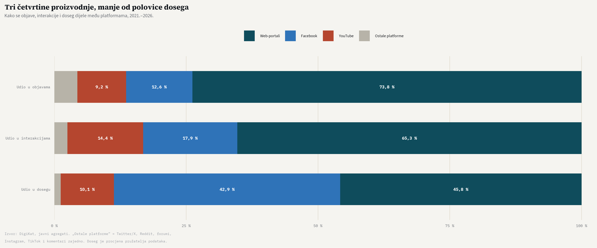

DigiKat — izvršni pregled / executive overview
Kartografija katoličke tematike u hrvatskom digitalnom medijskom prostoru
Izvršni pregled
2021.–2026.
DigiKat je istraživanje Hrvatskoga katoličkog sveučilišta koje računalnim metodama društvenih znanosti mjeri kako se o katoličkoj tematici piše i raspravlja u hrvatskom digitalnom medijskom prostoru, na portalima, društvenim mrežama i forumima. Provedeno je prema načelima otvorene znanosti.
Ovaj pregled sažima cijeli projekt. Digitalni prostor čita se kroz pet analitičkih razina: prva pokazuje tko objavljuje i s kolikim učinkom, druga o čemu se govori, treća kako se govori, a četvrta i peta kada rasprava eruptira i kako se prostor mijenja kroz vrijeme. Zajedno one od raspršenoga korpusa objava grade jasnu kartu digitalnoga medijskog prostora katoličke tematike. Svaka razina ovdje je sažeta na najvažnije, a poveznica vodi na stranicu koja je razrađuje.
DigiKat is a research project of the Catholic University of Croatia that uses computational social science to measure how Catholic topics are written about and discussed across Croatia’s digital media space: on news portals, social networks and forums. It is conducted according to the principles of open science.
This overview summarises the whole project. The digital space is read through five analytical layers: the first shows who publishes and to what effect, the second what is being discussed, the third how it is discussed, and the fourth and fifth when debate erupts and how the space changes over time. Together they turn a scattered corpus of posts into a clear map of the digital media space around Catholic topics. Each layer is distilled here to its essentials, with a link to the page that develops it in full.
710.307
Medijskih objavaMedia posts
9
PlatformiPlatforms
66,6 mil.66.6M
InterakcijaInteractions
2021.–2026.
Razdoblje analizeAnalysis period
Kako čitati brojke — tri osnovne metrikeHow to read the numbers — three core metrics
Volumen je ukupan broj objava i mjeri produktivnost aktera. Angažman su ukupne interakcije, odnosno zbroj lajkova, komentara, dijeljenja i sličnih reakcija publike. Doseg je procijenjeni broj korisnika koji su objavu mogli vidjeti. Doseg je procjena pružatelja podataka, a ne broj stvarnih pregleda.
Volume is the total number of posts and measures how productive an actor is. Engagement is the sum of interactions: likes, comments, shares and similar audience reactions. Reach is the estimated number of users who could have seen a post. Reach is a data-provider estimate, not a count of actual views.
Mapa ekosustava
01 · 4 arhetipa aktera4 actor archetypes
Tko objavljuje i s kojim učinkom
Prva razina mjeri volumen, doseg i angažman po platformama i izvorima. Na logaritamskoj karti dosega i angažmana, s rezovima na medijanima platforme, akteri se razvrstavaju u četiri arhetipa: Divove, Graditelje zajednica, Megafone i Specijalizirane aktere. Njihovi su položaji izračunati iz podataka, a ne procijenjeni.
Who publishes, and to what effect
The first layer measures volume, reach and engagement by platform and source. On a log–log map of reach against engagement, split at each platform’s medians, actors sort into four archetypes: Giants, Community Builders, Megaphones and Specialists. Their positions are computed from the data, not estimated.
Nalaz 1 — platforme se funkcionalno specijaliziraju
Web-portali proizvode 73,8 % svih objava, ali drže 65,3 % interakcija i tek 45,8 % dosega. Facebook s 12,6 % objava ostvaruje 42,9 % dosega, gotovo koliko i web, uz 6 puta manje objava. YouTube s 9,2 % objava preuzima 14,4 % interakcija. Najproduktivniji je pojedinačni izvor konfesionalni hkm.hr, s 56.500 objava.
Dominacija web-sadržaja nije samo brojčana. Ona odražava ulogu tradicionalnih medija kao čuvara vijesti u hrvatskom društvu, dok društvene i video platforme uspješnije potiču izravan angažman publike. Iz perspektive kompleksnih sustava riječ je o funkcionalnoj specijalizaciji niša unutar jednog ekosustava: platforme se ne natječu za istu ulogu, nego zauzimaju različite — proizvodnju, doseg i angažman.
Finding 1 — platforms specialise by function
Web portals produce 73.8 % of all posts, yet hold 65.3 % of interactions and only 45.8 % of reach. Facebook, with 12.6 % of posts, achieves 42.9 % of reach, almost as much as web, with 6 times fewer posts. YouTube, with 9.2 % of posts, takes 14.4 % of interactions. The single most productive source is the confessional portal hkm.hr, with 56.500 posts.
The dominance of web content is not merely numerical. It reflects the role of traditional media as gatekeepers of news in Croatian society, while social and video platforms are more effective at prompting direct audience engagement. Through a complex-systems lens this is functional niche specialisation within a single ecosystem: platforms do not compete for the same role but occupy different ones — production, reach and engagement.
12,6 % objava → 42,9 % dosega12.6 % of posts → 42.9 % of reach
Facebook: udio u proizvodnji naspram udjela u dosegu, 2021.–2026.Facebook: share of production versus share of reach, 2021–2026.
Graf pokazuje kako se svaka od tri metrike dijeli među platformama. Svaki stupac zbraja se na 100 %. „Ostale platforme” obuhvaćaju Twitter/X, Reddit, forume, Instagram, TikTok i komentare zajedno, a svaka od njih pojedinačno nosi manji udio.
The chart shows how each of the three metrics is split among platforms. Each bar sums to 100 %. “Other platforms” groups Twitter/X, Reddit, forums, Instagram, TikTok and comments together, and each of these individually carries a smaller share.
Nalaz 2 — četiri puta do utjecaja
Na karti dosega i angažmana Divovi su apsolutni lideri ekosustava, s visokim dosegom i visokim angažmanom. Megafoni dopiru daleko, ali ne potiču raspravu. Specijalizirani akteri djeluju u tematskim i geografskim nišama, s manjom publikom. Najzanimljiviji su Graditelji zajednica: akteri manjeg dosega, ali iznimno visokog angažmana, poput župnih Facebook stranica. Oni pokazuju put do utjecaja koji ne ovisi o veličini publike, nego o kvaliteti odnosa.
Među istaknutim primjerima izvora su konfesionalni hkm.hr, index.hr i bitno.net. Ne postoji jedinstvena formula uspjeha: do utjecaja se dolazi i masovnom produkcijom i fokusiranom izgradnjom zajednice.
Finding 2 — four paths to influence
On the reach–engagement map, Giants are the outright leaders of the ecosystem, high on both reach and engagement. Megaphones travel far but do not spark debate. Specialists operate in thematic and geographic niches with smaller audiences. The most interesting are the Community Builders: actors with modest reach but exceptionally high engagement, such as parish Facebook pages. They show a path to influence that depends not on audience size but on the quality of the relationship.
Prominent examples of sources include the confessional hkm.hr, index.hr and bitno.net. There is no single formula for success: influence is reached both through mass production and through focused community-building.

Karta utjecaja aktera: doseg (okomito) i angažman (vodoravno), po platformama; veličina točke je broj objava. Izvor:Actor influence map: reach (vertical) and engagement (horizontal), by platform; point size is the number of posts. Source: Mapa ekosustava
Tematske struje i atmosfera diskursa
02 · 16 tematskih kategorija16 thematic categories
Tematske struje
Druga razina odgovara na pitanje o čemu se govori: lematizacija (udpipe) i rječnik od 16 tematskih kategorija primijenjeni na korpus. Okosnicu diskursa čine Duhovnost i liturgija te Crkveno upravljanje i struktura, uz snažnu prisutnost politike i bioetike.
Thematic streams
The second layer answers what is being discussed: lemmatisation (udpipe) and a dictionary of 16 thematic categories applied to the corpus. The backbone of the discourse is Spirituality and liturgy together with Church governance and structure, with a strong presence of politics and bioethics.
03 · 8 emocija · RIK8 emotions · RIK
Atmosfera diskursa
Treća razina mjeri kako se govori: tonalitet (leksikoni CroSentilex i CroSentilex Gold), osam emocija (lilaHR) te Relativni indeks konflikta (RIK). Intenzitet konfliktnog jezika, a ne tonalitet, pokazuje se glavnim razlikovnim obilježjem narativnih okvira.
Discourse atmosphere
The third layer measures how things are said: tonality (the CroSentilex and CroSentilex Gold lexicons), eight emotions (lilaHR) and the Relative Conflict Index (RIK). The intensity of conflictual language, rather than tonality, turns out to be the main distinguishing feature of narrative frames.
Nalaz 3 — dva tematska svijeta
Diskurs se dosljedno dijeli na dva svijeta. Pastoralni svijet (Duhovnost i liturgija, Karitas i socijalna pravda, Digitalna evangelizacija) prati pretežno pozitivan prijem. Društveno-politički svijet (Politika i odnos s državom, Povijest i nacionalni identitet, Bioetika i kulturni ratovi) nosi najviše angažmana, ali i najjaču polarizaciju: konflikt, kontroverza i krizni narativi glavni su pokretači interakcija.
Riječ je o kvalitativnom obrascu, a ne o jednom postotku. Do istoga rascjepa neovisno dolaze dvije metode: supojavljivanje tema s reakcijama publike (Tematske struje) i mjerenje konfliktnog rječnika (Atmosfera diskursa). Upravo je ta konvergencija glavni razlog povjerenja u nalaz. U rječniku kompleksnih sustava riječ je o polariziranom prostoru tema s dvama atraktorima, čiju robusnost jamči suglasje dviju neovisnih metoda.
Finding 3 — two thematic worlds
The discourse splits consistently into two worlds. The pastoral world (Spirituality and liturgy, Charity and social justice, Digital evangelisation) meets a largely positive reception. The socio-political world (Politics and relations with the state, History and national identity, Bioethics and culture wars) draws the most engagement but also the sharpest polarisation: conflict, controversy and crisis narratives are the main drivers of interaction.
This is a qualitative pattern, not a single percentage. Two independent methods arrive at the same divide: the co-occurrence of themes with audience reactions (Thematic streams) and the measurement of conflictual vocabulary (Discourse atmosphere). That convergence is the main reason to trust the finding. In complex-systems terms this is a polarised topic space with two attractors, whose robustness is underwritten by the agreement of two independent methods.

Mreža povezanosti tematskih kategorija: dvije jasno odvojene skupine tema, pastoralna i društveno-politička. Izvor:Network of thematic-category links: two clearly separated groups of topics, pastoral and socio-political. Source: Tematske struje
Fokus na događaje i evolucija ekosustava
04 · prag: 3 standardne devijacijethreshold: 3 std. deviations
Fokus na događaje
Četvrta razina prati kada rasprava eruptira: „digitalni seizmograf” označava dane u kojima dnevni volumen i konfliktnost premašuju tri standardne devijacije. Detektirani vrhunci sustavno koincidiraju s poznatim događajima, od smrti i pogreba pape Franje u travnju 2025. do Božića, Uskrsa i Velike Gospe. To je odziv sustava na egzogene šokove, prepoznat standardizacijom dnevnog signala unutar svake godine.
Focus on events
The fourth layer tracks when debate erupts: a “digital seismograph” flags the days on which daily volume and conflict exceed three standard deviations. The detected peaks systematically coincide with known events, from the death and funeral of Pope Francis in April 2025 to Christmas, Easter and the Feast of the Assumption. This is the system’s response to exogenous shocks, detected by standardising the daily signal within each year.
05 · 55,8 % → 23,3 %
Evolucija ekosustava
Peta razina daje vremenski presjek: udio deset najvećih aktera u ukupnim interakcijama pada s 55,8 % (2021.) na 23,3 % (2025.), a angažman se seli s weba prema videu i društvenim mrežama. Utjecaj se raspršuje, a krug aktera širi.
Ecosystem evolution
The fifth layer offers a temporal cross-section: the share of the ten largest actors in total interactions falls from 55.8 % (2021) to 23.3 % (2025), while engagement migrates from web towards video and social networks. Influence disperses and the circle of actors widens.
Studija u fokusu — Tržišta pažnje
Digitalna pažnja ponaša se kao tržište sklono koncentraciji i dinamici „pobjednik nosi sve”: mali broj aktera prikuplja nerazmjeran udio interakcija. Studija Tržišta pažnje u religijskim digitalnim medijima mjeri koliko je pažnja skoncentrirana i kako se ta koncentracija razvija — izravan pandan petoj razini, na kojoj se utjecaj kroz vrijeme raspršuje. Riječ je o gradivu za modele koncentracije pažnje i natjecanja za vidljivost.
Study in focus — Attention markets
Digital attention behaves like a market prone to concentration and winner-take-all dynamics: a small number of actors gather a disproportionate share of interactions. The study Attention markets in religious digital media measures how concentrated attention is and how that concentration evolves — a direct counterpart to the fifth layer, where influence disperses over time. This is material for models of attention concentration and competition for visibility.
Kako nastaju podaci i analitičke razine
Svaka brojka u ovom pregledu ima isti rodoslov: od sirovih izvoza do javnih agregata podaci teku u jednom smjeru, a svaki korak proizvodi provjerljiv artefakt.
Every number in this overview shares the same lineage: from raw exports to public aggregates, the data flows in one direction, and each step produces a verifiable artefact.
01 · Prikupljanje — vendorski monitoring-izvozi u xlsx formatu: portali, društvene platforme, forumi.
01 · Collection — vendor monitoring exports in xlsx format: portals, social platforms, forums.
02 · Filtriranje — objava ulazi u korpus samo uz najmanje dva različita podudaranja s popisom od 95 hrvatskih religijskih pojmova, uz deduplikaciju po URL-u. Korpus je zato tematski zahvat koji miješa konfesionalne i sekularne izvore, a nije probran popis katoličkih medija ni mjera religioznosti. filtar ≥2 od 95
02 · Filtering — a post enters the corpus only with at least two distinct matches against a list of 95 Croatian religious terms, with deduplication by URL. The corpus is therefore a thematic sweep that mixes confessional and secular sources; it is not a curated list of Catholic media, nor a measure of religiosity. filter ≥2 of 95
03 · Korpus — glavni skup podataka: 710.307 objava × 47 varijabli, sa sigurnosnom kopijom prije svakoga prebrisavanja. Zbog zaštite sadržaja nije javan. master
03 · Corpus — the main dataset: 710.307 posts × 47 variables, backed up before every overwrite. It is not public, to protect the content. master
04 · Agregati — skripta R/03_aggregate.R proizvodi 14 javnih agregata bez osobnih podataka (CC BY 4.0), iz kojih su izračunate sve brojke ovog pregleda.
04 · Aggregates — the script R/03_aggregate.R produces 14 public aggregates with no personal data (CC BY 4.0), from which every number in this overview is computed.
05 · Analitičke razine — pet razina čita agregate i jezično obrađen tekst (udpipe, leksikoni CroSentilex, CroSentilex Gold i lilaHR) i pretvara ih u pet pogleda na isti korpus.
05 · Analytical layers — five layers read the aggregates and the language-processed text (udpipe; the CroSentilex, CroSentilex Gold and lilaHR lexicons) and turn them into five views of the same corpus.
Projekt slijedi načela otvorene znanosti: agregati su javni, a baza podataka distribuira se pod licencijom CC BY 4.0. Puni tekst objava dostupan je na zahtjev. Više o podacima donosi stranica Baza podataka.
The project follows the principles of open science: the aggregates are public, and the database is distributed under a CC BY 4.0 licence. The full text of posts is available on request. The Database page has more on the data.
Zbog toga korpus nije samo skup podataka nego otvorena istraživačka infrastruktura: cjelovit presjek jednoga nacionalnog medijskog sustava — 9 platformi, 6 godina, jezik razmjerno malena govornog područja i slabo pokriven u računalnoj lingvistici — s javnim agregatima i punim tekstom na zahtjev. Za računalne društvene znanosti i znanost o kompleksnosti to je empirijski poligon: prostor na kojem se modeli dinamike mnijenja, polarizacije i širenja narativa mogu provjeriti na stvarnim podacima, a ne samo simulirati.
The corpus is therefore not merely a dataset but open research infrastructure: a complete cross-section of one national media system — 9 platforms, 6 years, a language with relatively few speakers and thin coverage in computational linguistics — with public aggregates and full text on request. For computational social science and complexity science it is an empirical testbed: a setting in which models of opinion dynamics, polarisation and narrative spread can be validated against real data, not merely simulated.
Agentski sloj — pravila po kojima projekt nastaje
Uz podatkovni i analitički sloj, projekt ima i treći, manje vidljiv sloj: agentski. Dio razvojnog posla (pisanje koda, provjere kvalitete, priprema stranica) obavlja se uz pomoć agenata umjetne inteligencije (AI), ali ne slobodnom rukom. Središnja datoteka CLAUDE.md u javnom repozitoriju djeluje kao projektni ustav: svaki zahvat, ljudski ili strojni, prolazi kroz ista javna pravila, kodirane postupke (vještine), nezavisne provjere i tvrde brane.
Za znanstvenu je publiku ključno da taj sloj jamči i podrijetlo brojki. Svaka je vrijednost u ovom pregledu deterministička funkcija javnih agregata, iznova izračunata pri svakom renderiranju, pa svatko može reproducirati (ili osporiti) bilo koju brojku iz istih javnih podataka. Generiranje i provjera su odvojeni: nezavisni agenti ponovno izvode figure i provjeravaju renderiranje, a najrizičnije su operacije „fail-closed”. Konkretno, ovaj se pregled pri svakom renderiranju odbija sagraditi ako ne prođe devet ugrađenih provjera — među njima da korpus i dalje ima točno 710.307 objava na 9 platformi, da se udjeli po platformama zbrajaju na 100 % i da koncentracija utjecaja pada, a ne raste.
Ograda je jasna i namjerna: agenti jamče unutarnju dosljednost, nikada znanstvenu valjanost — oznake, tumačenja i konačne odluke ostaju ljudski. Sam je postav pritom prenosiv predložak za otvorenu računalnu društvenu znanost uz pomoć umjetne inteligencije i može postati predmetom istraživanja.
Kako je sloj ustrojen — ikonografski prikaz njegovih četiriju organa (pravila, vještine, provjere, zaštite), životni ciklus svakog zahvata i tvrde brane — razrađen je na zasebnoj stranici, dostupnoj i na engleskom.
Alongside the data layer and the analytical layer, the project has a third, less visible one: the agentic layer. Part of the development work (writing code, quality checks, preparing pages) is done with the help of artificial-intelligence (AI) agents, but not freehand. The central file CLAUDE.md in the public repository acts as the project’s constitution: every action, human or machine, passes through the same public rules, codified procedures (skills), independent checks and hard guards.
For a scientific audience, what matters is that this layer also guarantees the provenance of the numbers. Every value in this overview is a deterministic function of the public aggregates, recomputed on each render, so anyone can reproduce (or falsify) any number from the same public data. Generation and verification are separated: independent agents recompute the figures and run the render checks, and the riskiest operations are fail-closed. Concretely, this overview refuses to build on each render unless nine built-in checks pass — among them that the corpus still holds exactly 710.307 posts across 9 platforms, that the platform shares sum to 100 %, and that the concentration of influence falls rather than rises.
The limit is clear and deliberate: the agents guarantee internal consistency, never scientific validity — the labels, interpretations and final decisions remain human. The setup itself is a transferable template for open computational social science under AI assistance, and could become an object of study in its own right.
How the layer is built — an iconographic of its four organs (rules, skills, checks, guards), the life cycle of every change, and the hard guards — is set out on a dedicated page, also available in English.
Gdje dalje
Cjelovite analize, interaktivna mreža izvora i otvorena baza podataka dostupni su na stranicama projekta. Mreža izvora prikazuje sve praćene izvore kao interaktivni graf. Poveznice su u njemu strukturne (pripadnost platformi i zajednički brend), a ne izmjereni odnosi. Sljedeći je korak na planu prijelaz na izmjerene mreže: supojavljivanje aktera oko događaja, širenje narativa među platformama i interakcije na razini komentara.
The full analyses, the interactive source network and the open database are available on the project’s pages. The source network shows every tracked source as an interactive graph. Its links are structural (platform membership and shared brand), not measured relationships. The next step on the roadmap is a move toward measured networks: co-appearance of actors around events, narrative diffusion across platforms, and comment-level interaction.
doc. dr. sc. Luka Šikić voditelj projekta · Hrvatsko katoličko sveučilište · DigiKatprincipal investigator · Catholic University of Croatia · DigiKat
DigiKat · CC BY 4.0 · sve su brojke izračunate iz javnih agregata pri renderiranju.DigiKat · CC BY 4.0 · all numbers are computed from the public aggregates at render time.